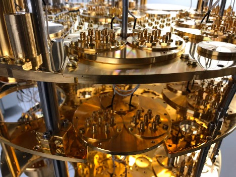

Potential career paths in quantum computing
A quantum computer can only emerge from a family of researchers, engineers, developers, designers andbuilders
in the community united by a challenge that is, at its very core, a fundamental part of
harnessing nature. These roles are many and each is interconnected with and vital to the others.
Diversity of thought and experience will be equally important, resulting in opportunities for internships
and professionals with varying years of experience. Exciting roles certainly abound at IBM in quantum computing:
- Superconducting Qubit Researchers study the fundamental element: the qubit. At IBM, we
work on superconducting qubits. Although remarkable progress has been made in
coherence and thermalization, these metrics must continue to improve. As systems
grow ever larger, we need to engineer extensible components for the full
quantum hardware system. Superconducting qubit processor improvement is
primarily driven by physicists with expertise in condensed matter physics
working in close collaboration with quantum engineers. The physical processors
themselves are made by researchers and technicians with backgrounds in device
design and layout, micro-fabrication, and process integration, with a fair bit
of transferable knowledge from semiconducting chip integration.
- Quantum Control Researchers study the problem of making high fidelity quantum gates.
Qubits operate chorally, as part of bigger systems, and the intricacies of their
interactions make precisely isolating ideal qubit operations extremely challenging.
With superconducting qubits, one typically uses carefully shaped microwave pulses.
A researcher in this area needs an understanding of optimal control, Hamiltonian modeling,
dynamical decoupling and microwave hardware expertise. The latter expertise is required for
conditioning and processing the classical microwave signals used to control and readout
the superconducting qubit processor.
- Quantum Error Correction Researchers study codes and protocols for reliable information
storage, processing, and transmission of quantum information. One of the central problems
is to devise efficient methods for computing in the presence of realistic rates of control
errors, decoherence, and other noise and imperfections. These fault-tolerant quantum computing
protocols influence the long-term design and architecture of quantum computers.
- Quantum Computer Architects help design the software stack that enables near-term explorations
and scientific experiments with quantum computers. They define the abstraction layers for the different
pieces of software, and design an overall system for efficiency and scalability. This includes
optimizing quantum programs, defining user interfaces, and benchmarking an evolving software
framework. They also define the connections between classical systems and the new quantum systems.
- Quantum Complexity Theorists study the fundamental strengths and limitations of quantum computing as
a model of computation. Complexity theorists are interested in precise classes of problems that can be
solved efficiently, and classes of problems that are unlikely to ever have efficient solutions.
One recent direction is to understand limited computing models inspired by near-term devices,
such as computations that are restricted to circuits with shallow depth.
- Quantum Algorithms Researchers explore computational problems that can be solved more efficiently
by harnessing quantum effects such as quantum randomness and entanglement. They develop basic
subroutines for quantum programs and identify new application areas for quantum computers.
Of particular interest are polynomial-time quantum algorithms that are believed to be the
most powerful form of computation permitted by the laws of physics. An ideal quantum algorithms
researcher will therefore help us design and implement new quantum algorithms and advance the research
on existing algorithms. The researcher will also collaborate with our industrial partners to
address domain-specific problems in a growing number of disciplines.
- Quantum Cryogenic Engineers study and develop the tools for keeping our systems
cold. The infrastructure for a quantum computing system is very different from traditional mainframes
and other classical computation hardware. In the case of superconducting qubits, this includes low-temperature
(~15mK) physics know-how for cryogenic dilution refrigerator operation. The engineer will have experience
with thermometry techniques and low-temperature engineering/thermalization and familiarity with thermal
modeling.
- Quantum Microwave Engineers develop the packaging and microwave hygiene that makes high fidelity
operation of these devices possible. They need extensive experience in modeling and simulating
complex structures operating in the microwave frequency regime, and developing electrical circuits
for quantum computing processors. Expertise with electromagnetic modeling tools, such as HFSS,
Microwave Office, or other microwave simulation tools are a must to better understand quantum
hardware control and packaging. Familiarity with how to quantize a microwave circuit into a quantum
Hamiltonian is an added bonus.
- Quantum FPGA Engineers develop the tools for running more complex experiments. As these experiments
get bigger we have to more processing near the device. To work in this are have extensive VHDL
experience and are capable of working with FPGAs to control and readout microwave signals for
qubit control is a must. The ability to also work on analog microwave hardware design would
complete the skill set.
- Quantum Software Developers A few years ago, my colleague and friend Jerry Chow decided to put a
quantum computer on the web. We would take what we did in the lab and put it online —
how hard could it be? Totally underestimating the complexity of software, I signed up,
thinking “no problem.” That endeavor has been one of the most challenging things I have
ever done, and it would have been impossible without the input of a software developer.
Early on in the project, I was lucky enough to encounter Ismael Faro, who had no quantum
experience — and with his collaboration, our quantum computer in the cloud has been a success
with now over 100,000 users. While we as researchers may know what we want to do, I know now that
making sure it is usable, maintainable, and modular is not so simple. It requires the intellect
and creativity of a really good developer. We need developers who want to build some of the more
critical parts of this quantum revolution, from the user interfaces, open source SDKs, cloud services,
and APIs, down to the systems software. Our developers apply all aspects of classical computer engineering
in a fast-paced DevOps environment to optimize and connect the classical and quantum worlds.
- Quantum Community Builders work to make sure that our technology meets the needs of the people. It’s
important that we must value people first, technology second. Our work is only as relevant as the world we
share it with . Because of this, creating authentic and vibrant communities around our technology has to
become a way of life. Community builders are the glue that help our team meaningfully connect with and
teach people about quantum computing. No matter how many new people I meet, many are not aware that
IBM has for 2 years made our 5 and 16 qubit devices available for anyone to use, and have been building
out our Qiskit software in open source on Github for almost as long. One of the main reasons we chose
to do this in the open was the desire to connect with the community.
- Quantum User Experience Designers bridge between the quantum community,
technical requirements, data driven user research, and conceptual ideas by creating experiences
that bring value to the people they serve. They start with a hypothesis and then by working with
the users (students, researchers, professors, industry clients) determine how to design the experience
and make sure a product is built for its users. Without our design team working with research and
development, we would have never created the first IBM Quantum Experience.
Position: Research Engineer, Quantum Networks & Communications
Aliro spun out of Harvard’s Quantum Information Technology lab in 2019. Our co-founder and CTO
is Prof. Prineha Narang, who is well-known in the QIT field. Aliro is developing some foundational
technologies in Quantum Networking and Communications. Applications include highly secure communications,
improved deep space communications, satellite sensor networks, and more. We recently won two
grants from the U.S. Air Force for research in related topics. We are hiring a Research Engineer,
Quantum Networks & Communications who is passionate about doing pioneering work and building new software
in this emerging branch of the quantum revolution. In this position, you will not only develop new
techniques, but will also implement them in our stack and product offerings. You will also work
closely with the rest of the research team in developing new ideas and clever approaches to some of
the hardest problems facing quantum networking and computing today.
What you’ll do:
• Leverage physics knowledge, software engineering skills and creative thinking to develop novel quantum networking software solutions
• Define concrete problems in an abstract and emerging area of research, come up with creative solutions, and
implement them in the existing code stack
Required background:
• Bachelor’s degree in Physics, EE, CS, Math, or a related field
• At least 2 years of experience programming in popular programming languages (Python/Java/C++/etc.)
• Ability to break down abstract problems into small iterable parts
• Good communication skills
Preferred background:
• Graduate degree in Physics, EE, CS, Math, or a related field with a focus on photonics
• Publications in a related field
Bonus background:
• Quantum networking experience or training, particularly in the photonic realm
Position: Research Software Engineer
What you’ll do:
• Leverage software engineering skills and creative thinking to develop novel quantum software solutions
• Define concrete problems in an abstract and emerging area of research, come up with creative solutions,
and implement them in the existing code stack
Required background:
• Bachelor’s Degree in CS, Physics, Math, EE, or a related field
• At least 2 years of experience programming in popular programming languages (Python/Java/C++/etc.)
• Ability to break down abstract problems into small iterable parts
• Good communication skills
Preferred background:
• Graduate degree in CS, Physics, Math, EE, or a related field
• Publications in a related field
Bonus background:
• Quantum computing experience or training, particularly in Trapped Ion technology
Position: Software Developer
What you’ll do:
• Leverage software engineering skills to develop APIs and plugins for quantum software development tools
• Use your imagination and perseverance to take prototype to production
Required background:
• Bachelor’s Degree in CS, Math, EE, or a related field
• At least 2 years of professional experience programming in popular programming languages (Python/Java/C++/etc.)
• Ability to break down abstract problems into small iterable parts
• Good communication skills
Preferred background:
• Graduate degree in CS, Math, EE, or a related field
Bonus background:
• Quantum computing experience or training
• Experience in compiler construction or programming language design